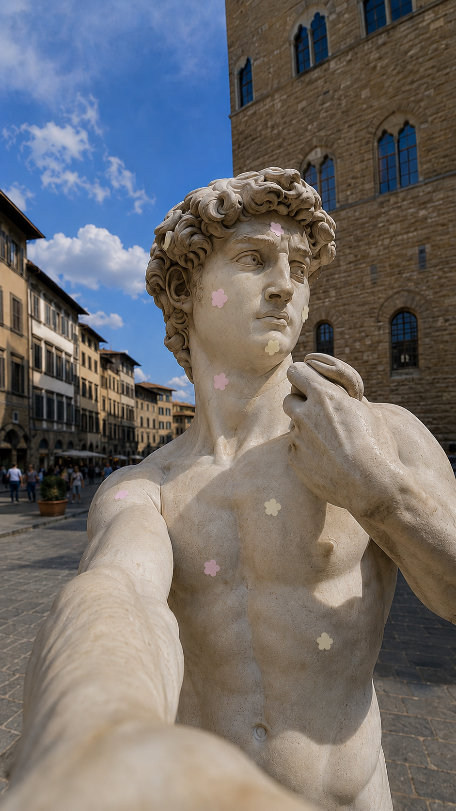
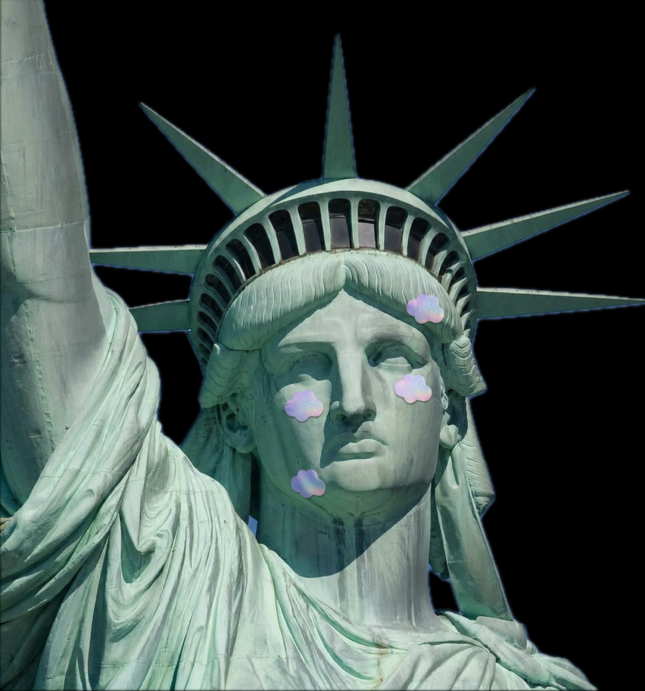
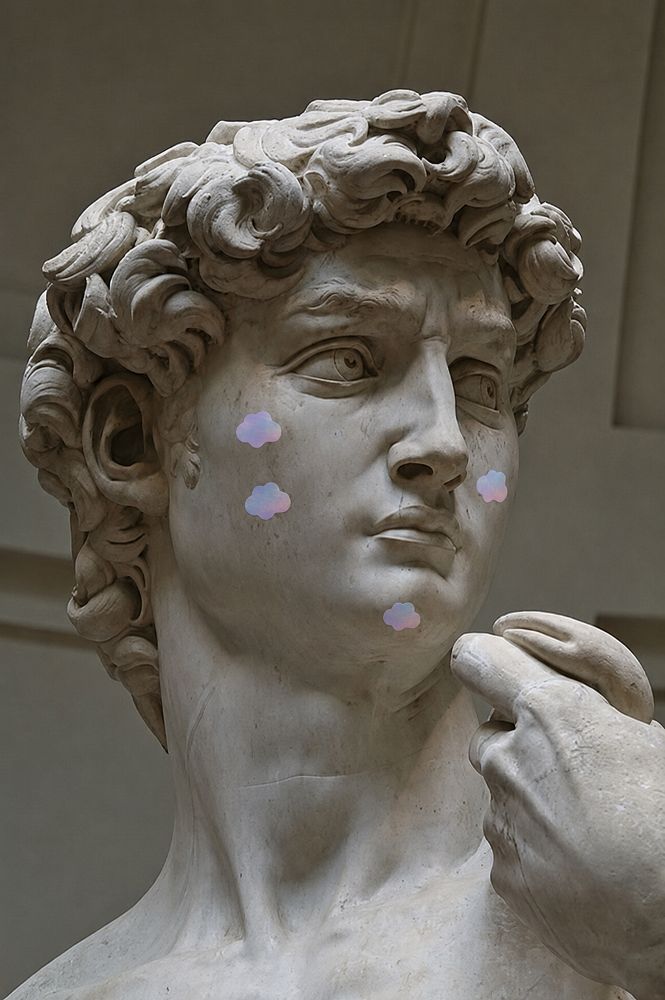

Overview
What if the world's most famous statues had pimples? A campaign concept I proposed for Joydotz: put the patches where nobody expects them, on icons everyone already knows.
The idea takes an established brand and finds a fresh angle without breaking its soft, collectible tone. It is not published yet: Joydotz just launched this product, so the first phase is real model photos and consumer and influencer feedback. This campaign is planned for a later phase.
Famous Statues+Pimple Patches
See the Joydotz site rebuild →What If Statues Have Pimples



Blind Box Characters
Developed with the Joydotz team: sell the patches as blind boxes, giving each of the three patch shapes (flower, cloud, butterfly) an original character in the style of Sailor Moon or My Little Pony.
Future product drops would become "skins" of those three starter characters rather than entirely new SKUs, modeled on Pop Mart's approach, to deepen brand storytelling for the Gen Z audience beyond "just a daily patch."